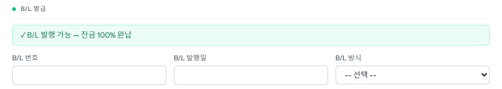
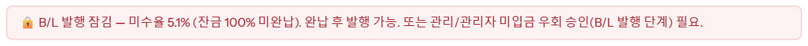
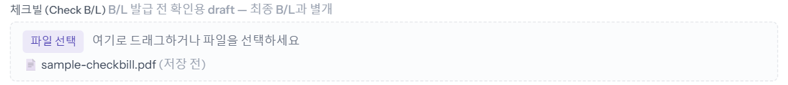
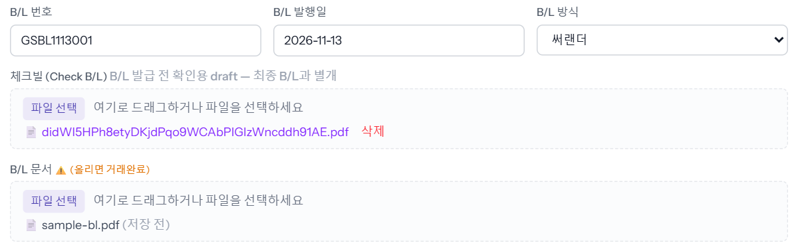
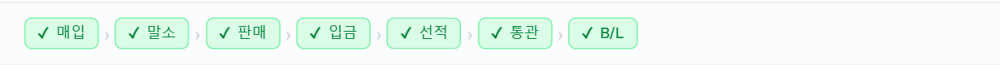
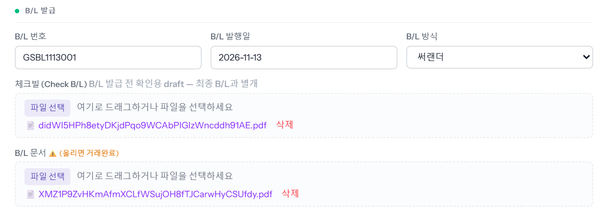
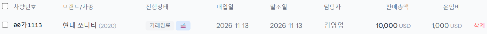

배가 떠난 차에 B/L(선하증권)을 올려 거래를 끝내는 단계입니다. 수출통관이 합니다. 체크빌(초안)을 먼저 받아 확인하고, 최종 B/L이 나오면 번호·발행일·방식과 함께 B/L 문서를 올립니다. B/L 문서를 올리고 저장하는 순간 진행상태가 「거래완료」가 됩니다.
2026-11-14 로컬 화면에서 「수출통관」 계정으로 앞 씬의 예시 차량 00가1113(통관완료 · 완납)을 실제로 저장하며 찍었습니다. B/L 번호와 파일은 가이드용 가짜 값입니다.
판매 대금을 다 받은 차는 초록 칸에 「✓ B/L 발행 가능 — 잔금 100% 완납」이 뜹니다. 아래에 B/L 번호 · B/L 발행일 · B/L 방식 칸이 있습니다.

대금이 조금이라도 남은 차는 빨간 칸이 뜨고 B/L 문서를 저장할 수 없습니다. 아래는 미수율 5.1%가 남은 다른 차의 화면입니다.

※ 반입·선적은 대금 일부만 받아도 되지만(회사 기준 입금률), B/L은 완납이어야 합니다. 완납 전에 꼭 보내야 하면 관리에게 「B/L 발행」 단계 우회 승인을 받습니다 — 씬 「입금률 게이트에 막혔을 때」.
포워딩사가 최종 B/L 전에 보내 주는 확인용 초안(체크빌)을 「체크빌 (Check B/L)」 칸에 끌어다 놓거나 [파일 선택]으로 올립니다. 「(저장 전)」으로 보이면 [수정 저장]을 누릅니다.

체크빌은 최종 B/L과 따로 보관되는 파일이라 올려도 진행상태는 바뀌지 않습니다(예시 차량은 그대로 「통관완료」). 체크빌의 바이어·컨사이니·차대번호를 확인하고 틀린 곳이 있으면 포워딩사에 고쳐 달라고 합니다.

[수정 저장]을 누릅니다. 수출통관 계정은 확인 창 없이 바로 저장됩니다.
차를 다시 열면 창 위 진행 줄의 「B/L」에도 초록 체크가 붙어 일곱 칸이 모두 끝납니다. 올린 체크빌·B/L 문서는 눌러서 열 수 있고, 파일 이름은 알아보기 어려운 영문·숫자 이름으로 바뀌어 보이는 것이 정상입니다.


목록의 진행상태도 「거래완료」로 바뀝니다. 배가 아직 가는 중이면 옆의 🚢(운항중) 표시는 그대로 남습니다.
